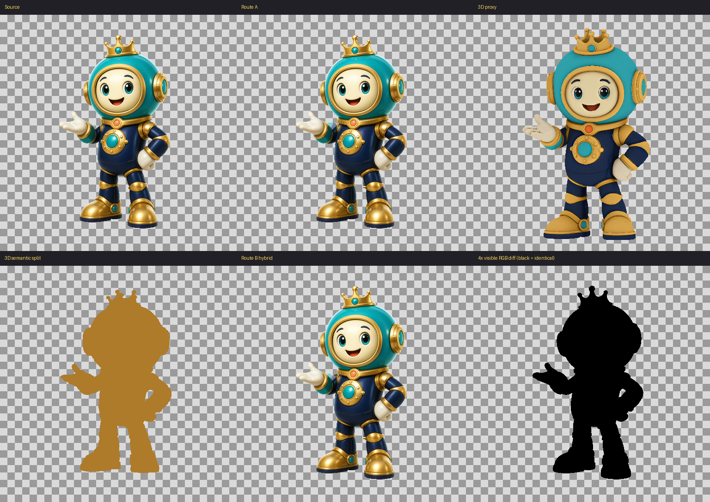
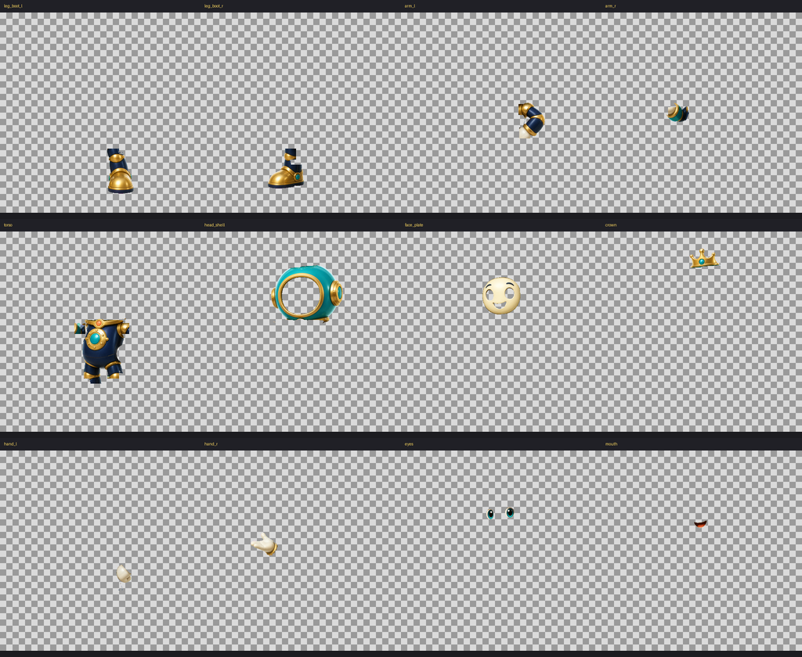

三、拆了兩次：品質全過，工時是直接拆的 4.36 倍
Cut Twice
品質過得了，但人修的時間是直接拆的 4.36 倍，卡在對位，所以 3D 在這條產線只補人看不見的地方。
疑惑
拆件最麻煩的就兩樣：每一件放在哪裡，還有哪裡被擋住。現在影像轉 3D（image-to-3D）這麼熱，先把角色轉成 3D，這兩樣機器不就都知道了？
主張
品質過得了，但人修的時間是直接拆的 4.36 倍，卡在對位，所以 3D 在這條產線只補人看不見的地方。
三分鐘版
拆件最麻煩的就兩樣：每一件放在哪裡，還有哪裡被擋住。你大概也想過：先把角色轉成 3D，這兩樣機器不就都知道了？我們真的去試了。
同一隻測試用的機器人角色，拆成十二件透明圖層，拆了兩次。一次直接從原圖拆：分割模型圈出範圍，像素取自原圖，人跟在後面修。一次繞 3D：先把角色重建成 3D 替身，選相機、對位，再把每一件的輪廓投影回原圖，照著拆。兩次都走完同一套驗收，人修的時間也都記下來。
品質那關，兩條路都過。十二件一件不缺。拼回去跟原圖逐像素比，看得見的地方一個像素都沒動。關節掰到極限，接縫零像素。操作者看過對照板，點頭。
時間那關就不一樣了。直接拆，人修了三十九分鐘。繞 3D，人修了兩小時五十分鐘，是直接拆的 4.36 倍。及格線事前就寫死：繞 3D 至少要省三成。結果反而多花三倍多。
時間爆在哪？對位。相機平均差了 9.56 像素，每一件投影回來都歪一點，件件要人拉回原位。大家最擔心 3D 補得像不像，那反而不是問題。卡住的是對位，事前沒人擔心。
所以判決不是 3D 沒用，是 3D 用錯位置就虧。現在它在產線只補人看不見的地方：被擋住的、關節掀開才露出來的。看得見的像素一律歸原圖管。這條規則直通下一章的母圖法則。尺度講清楚：單一角色、一次試點，數字不外推。
推導
為什麼想用 3D
2D 拆件有兩個天生的難點。位置：每一件切下來，要放回正確的座標，關節處誰壓誰要對。遮擋：被手擋住的軀幹、被頭擋住的肩膀，切下來是破的，要補完整。畫的人腦裡有 3D，轉個念就補得出來；模型沒有。3D 重建看起來能一次解決兩樣：幾何有了，位置和遮擋都算得出來。這個想法值得花一次錢認真驗。
兩條路怎麼試
同一隻角色、同一套驗收、兩條路，簽名報告裡叫 Route A、Route B。直接拆（Route A）：開源分割模型圈出十二件的範圍，像素取自原圖，人修遮罩和邊。繞 3D（Route B）：先重建替身，生成出來一直不像本人，最後用一顆操作者授權的外部 3D 模型，簽了例外。接著選相機、對位，把零件輪廓投影回原圖照著拆。執行環境全部釘死：主機、顯示卡（GPU）服務、三個模型的版本與雜湊，都在簽名報告裡。
品質那關，兩條路都過
- 十二件一件不缺。遮罩聯集蓋滿前景，重疊率（IoU）1.0，出界 0.0。
- 拼回原姿勢：看得見的像素顏色值（RGB）誤差 0.0，逐位元相同；最大接縫 0 像素。
- 六個關節各掰到正負極限、共十八格：透空 0 像素、接縫 0 像素。
- 操作者目檢：分件、頭冠、手、臉、關節、像不像本人，全過。
繞 3D 那條路，原始指標沒有全及格：替身輪廓 IoU 0.68、對位後輪廓 0.92、地標平均誤差 9.56 像素、各件投影 0.51 到 0.80。這幾項靠操作者簽例外放行，原始數字照登。例外的條件後來寫成規矩：看得見的像素以原圖為準，3D 只補被擋住的和關節掀開的，各件不准自己獨立變形。
時間那關，差了 4.36 倍
比的是「主動修正時間」：人真正動手修的秒數，機器跑的不算。直接拆 2331.8 秒，約三十九分鐘；繞 3D 10176.7 秒，約兩小時五十分鐘。及格線事前就寫死：繞 3D 要省至少 30%。實際多花 336%。整張驗收表唯一一個不及格（Fail）就是這格。
時間帳沒有細目，對位的數字看得出時間花在哪：平均差 9.56 像素，最差的件投影重合只有 0.51。每一件都差一點，件件都要人拉回去。人拉的時間，把 3D 省下來的全部吃回去，還倒貼。
錢花在哪
被採用的那幾步都便宜：替身渲染 2.5 秒、選相機 2.0 秒、材質轉移 26.3 秒、語意渲染 21.4 秒，GPU 記憶體峰值不到 2GB。貴的在重建失敗那段：七套策略、二十次嘗試。前三套把 GPU 記憶體吃過 8.5GB，一直當。第四套跑完，比例和姿勢不對。第五套換生成多視角，還是不像本人。最後靠外部替身簽例外才走完。語意遮罩也磨了十三次才凍結。
3D 降級後放在哪
判決欄寫 retain_as_research：不上產線，收進研究線。降級不是丟掉。現在它的位置是：看得見的像素歸原圖，3D 只補被擋住的和關節掀開的。這條規則是這次試出來的，下一章母圖法則整個蓋在上面。
什麼時候值得再試
翻案條件事前就寫死兩條：相機對位自動達標，不再靠人簽例外；被擋住的地方靠生成補起來，人只要少量修。帳本上的編號是 G06、G07。這兩個缺口補起來，同一套驗收重比一次就知道。
輪到你了
這章你是裁的人。你收到一塊證據板：拼回對照圖、各件獨立圖、十八格關節壓力圖，每一關的數字排在旁邊。工具就是圖片檢視器，加版本控制系統（git）上那份簽名報告。要下的決定一句話：過、不過、或簽例外。你簽的例外會連原始數字寫進報告，三個月後翻得出來。品質那幾格可以簽例外。時間那關是事前寫死的硬門檻，沒得簽。
收據
-
判決與全部原始數字（簽名報告摘要）
docs/superpowers/specs/2026-07-30-character-3d-to-2d-pilot-result.md -
證據總表
docs/evidence/character_3d2d/README.md -
拼回對照板

-
拼回成品
-
各件獨立圖

-
十八格關節壓力圖

-
上圖的位移對照（紅色＝該格相對 0° 動到的像素，每格 79〜600 像素、約 0.3%〜2.1%；產圖腳本在同資料夾）

-
可見像素逐位比對圖

{kind=link}
{kind=link}
{kind=link}
失敗現場
3D 重建連續三套失敗，GPU 記憶體吃過 8.5GB。第四套跑完，臉不像本人。第七套用外部替身，簽了例外才走完。
沉澱出來的規則：品質過了還不夠，人修的時間也要過；兩關都過才上產線。